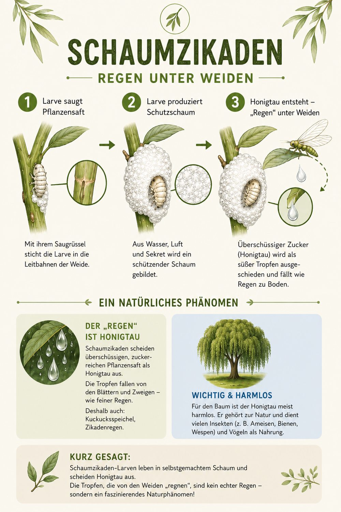

Warum „regnet" es unter Weiden?
Die heimlichen Regenmacher.
👉 Schuld sind oft die Larven der Schaumzikaden. Sie saugen große Mengen Pflanzensaft und scheiden den Überschuss wieder aus – die Larve hüllt sich dabei in ihren bekannten Schaum („Kuckucksspeichel"). Unter stark besiedelten Weiden tropft diese Flüssigkeit fein herab, fast wie ein leiser Sommerregen aus heiterem Himmel.